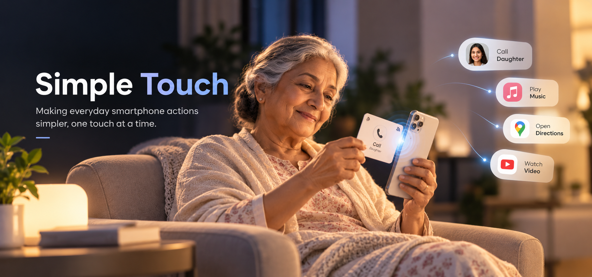

Every memory Connects to
a simpler tomorrow
Overview
OneTap is a simple physical interface designed to help older adults access everyday digital actions without navigating a complex smartphone.
Using familiar photographs and objects with NFC, a simple tap can trigger actions such as calling a doctor or family member, starting a video call, playing music, or opening digital content.
By turning familiar physical objects into simple touch points, OneTap makes everyday technology easier to access, understand, and use.
My Role
I worked across the end-to-end design process—from user research and problem definition to concept development, interaction design, physical prototyping and service design. I explored how familiar physical interactions and NFC could reduce digital complexity and support greater independence for older adults.
Target audiance
Older adults aged 60 and above
6-step Design process
Understand the users, context and problem.
- Primary research
- User Interviews
- Surveys
- Observations
- Secondary research
- Research Findings
Turn research findings into a clear design problem.
- Pain points
- Affinity Mapping
- Personas
- Empathy Map
- Problem statement
Ideate different ways to reduce digital complexity.
- Ideation
- Brainstorming
- Interaction concepts
- Physical-digital opportunities
Turn the strongest idea into the Phonoframes experience.
- NFC interaction
- Product concept
- Interaction model
Build and experience the idea in the physical world.
- Physical prototypes
- NFC prototype
- User scenarios
- Interaction flows